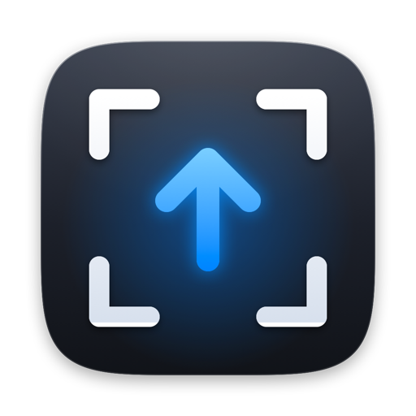
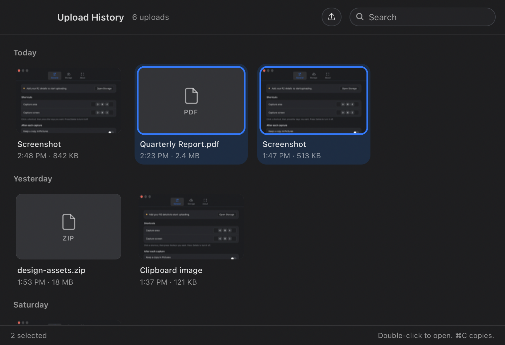
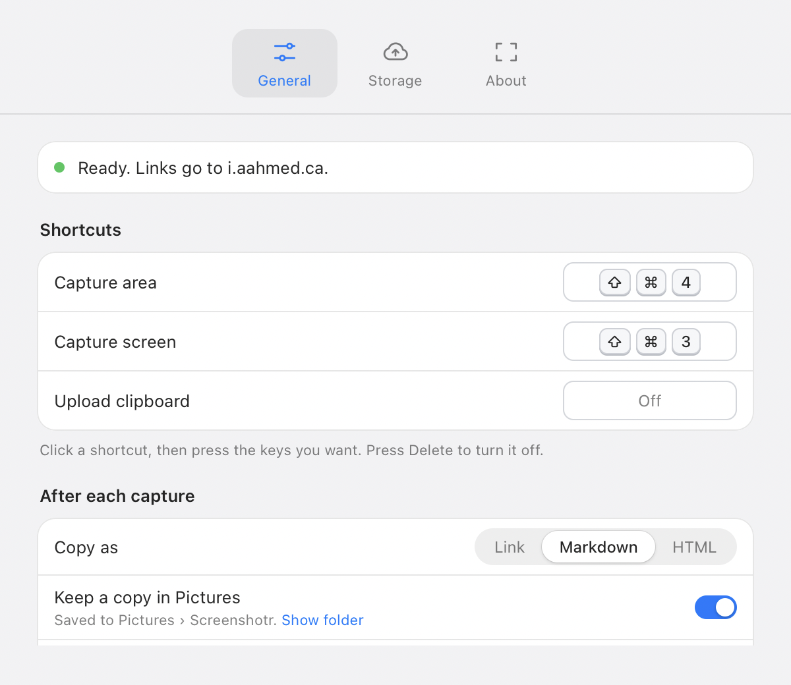

Uploadingto i.aahmed.ca
Link copiedi.aahmed.ca/screens…k2Jd8fQa.png

Screenshotr lives in your menu bar. Capture with ⇧⌘4 and the link is on your clipboard a moment later, uploaded to storage you already own.
Free for personal use · macOS 13 or later · Apple silicon
The overlay, the menu bar icon and the sound are all part of the app.
Every way into Screenshotr ends the same way: one upload, one link on your clipboard, and an entry in your history.
https://i.aahmed.ca/screenshot-k2Jd8fQa.png


Screenshotr has no server. Point it at what you already use, save as many destinations as you like, and switch with one click. Cloudflare R2 needs a single token; ShareX uploaders import from a file.
Free for personal use. Signed, notarized by Apple, and it keeps itself up to date.
brew install --cask asharahmed/tap/screenshotr